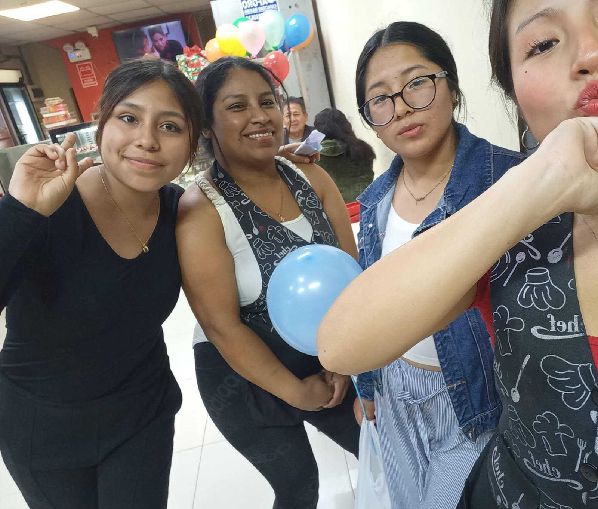

Nuestro Personal
Siempre listos para servirte con una sonrisa.
Nuestro Personal
Siempre listos para dar cariño a los clientes.
Pastelería Valeric: Desde el corazón hacia tu mesa ,tortas con mucho cariño y amor llevando nuestra dulzura a todas las Casas y familias de San juan de Miraflores
Desde 2012, hemos endulzado los momentos más especiales de nuestros clientes. Nacimos como un pequeño negocio , con la misión de compartir la pasión por la repostería. Hoy, gracias a nuestro amor por los detalles, somos conocidos por nuestras tortas únicas y deliciosas, postres deliciosos y atención personalizada , gracias a nustro personal con los atenderà con mucho cariño y paciencia.
Siempre listos para servirte con una sonrisa.
Siempre listos para dar cariño a los clientes.
0
Pasteles Vendidos
0
Años de Experiencia
0
Clientes Felices